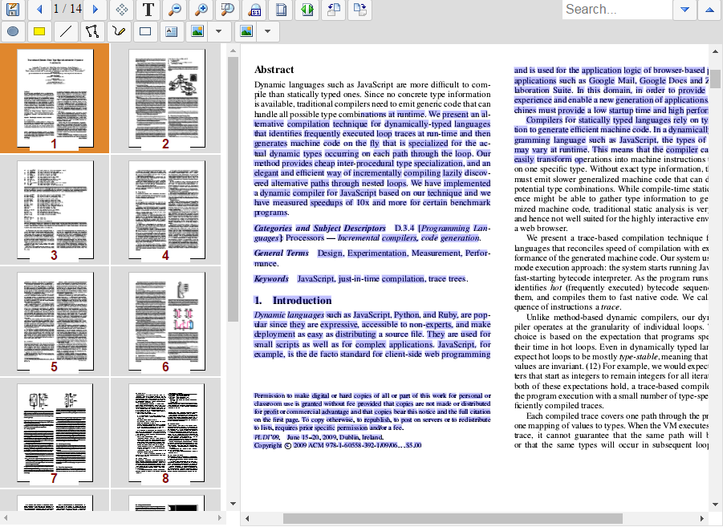

Web Document Viewer Server Side programming model
Atalasoft.Imaging.WebControls.WebDocumentRequestHandler HttpHandler is responsible for WDV and WDT backend logic.
The default handler is completely functional and could be used out of the box to setup document imaging controls displaying documents from the server file system.
To customize default behavior it's recommended for application to
for ASP.NET application - derive it's own class from
Atalasoft.Imaging.WebControls.WebDocumentRequestHandlerand subscribe to base class events.for ASP.NET Core application - to register WebDocumentViewerMiddleware and provide
IWebDocumentViewerCallbacksimplementation as theRunWebDocumentViewerMiddlewaremethod parameter. You can derive it's own class fromAtalasoft.Imaging.WebControls.Core.WebDocumentViewerCallbacks, which, in fact, is default implementation of theIWebDocumentViewerCallbacksinterface.
WebDocumentRequestHandler default behavior relies on globally registered image decoders when opening image documents.
Those decoders are available through Atalasoft.Imaging.Codec.RegisteredDecoders class so the application control which types of the documents are supported by WDV.
Note that by default PDF and Office decoders are not added to RegisteredDecoders, so that should be done by the application to support those types of documents.
public class WebDocViewerHandler : Atalasoft.Imaging.WebControls.WebDocumentRequestHandler
{
static WebDocViewerHandler()
{
Atalasoft.Imaging.Codec.RegisteredDecoders.Decoders.Add(new Atalasoft.Imaging.Codec.Pdf.PdfDecoder());
Atalasoft.Imaging.Codec.RegisteredDecoders.Decoders.Add(new Atalasoft.Imaging.Codec.Office.OfficeDecoder());
}
}Document Lifecycle Events
Displaying document in WDV consist of multiple operations, each of which is represented with corresponding WebDocumentRequestHandler event that could be used for behavior customization.
Below is the common order of document lifetime events.
WebDocumentRequestHandler.DocumentInfoRequested
Occurs when document is being opened, for example by calling openUrl method or passing document identifier to control constructor.
The purpose of this step is to load document metadata. No images are requested here.
There are two required metadata property that should be filled
DocumentInfoRequestedEventArgs.PageCountCount of the pages in the document. Page images will be loaded on demand when control will be scrolled to corresponding position.DocumentInfoRequestedEventArgs.PageSizeEstimated size of the document pages. It's used to calculate scrollbars, zoom values, indexes of the page to display when scrolling into unloaded area. It's not required that all document page have same size. When image data is loaded control will adjust it's internal state. But it's recommended to set this size close to majority of the document pages. If not set explicitly, size of the firs document page is taken for this property.Default implementation is trying to map
DocumentInfoRequestedEventArgs.FilePathto the file on the server file system, find appropriate decoder to read the image and fill required metadata.Note, that default implementation allows absolute paths including network shares. It's application responsibility to filter that out if needed.
Application could override default behavior by either directly setting document metadata to
DocumentInfoRequestedEventArgsor by modifyingDocumentInfoRequestedEventArgs.FilePathpoint to file on the server file system. In this case,documenturlvalue passed from the JavaScript could have arbitrary application specific values, for example id of the document in the database of even base64 encoded json.
There are additional optional document metadata properties that could be set by event handler. For example,
DocumentInfoRequestedEventArgs.AnnotationFilePathSimilar to
DocumentInfoRequestedEventArgs.FilePathbut applies to annotations file.DocumentInfoRequestedEventArgs.AnnotationLayersAllows to set annotations data using object model. If layers is not set by handler and
AnnotationFilePathis present, default handler implementation will try to deserialize annotations from the specified file.This property could be used to provide annotations from external source, for example to load from database, create on fly or to convert from application-specific format.
DocumentInfoRequestedEventArgs.IsVectorFlag indicating whether document images could be scaled to zoom values greater then 1.
DocumentInfoRequestedEventArgs.FormFilePathDocumentInfoRequestedEventArgs.PdfDocumentSimilar to annotations data source but applies to pdf forms. It's recommended to omit those properties and proceed with default behavior. In this case,
DocumentInfoRequestedEventArgs.FilePathwill be treated as PDF forms data source it's a PDF file.Although it's possible to load pdf forms data from external PDF documents, saving forms back to original document could cause forms structure conflict, or just missing form fields.
Additionally if
DocumentInfoRequestedEventArgs.PdfDocumentis provided by the handler,PageCountandPageSizewill be automatically extracted from it.DocumentInfoRequestedEventArgs.ThumbCaptionFormatCould be used to specify thumbnail captions mask that will be used in WDT to generate thumbnail caption. Default
DocumentInfoRequestedEventArgs.ThumbCaptionFormatvalue is the value passed from JavaScript side(as configured in WDT). There are two optional tokens allowed in the format string.- {0} - will be substituted with page number.
- {1} - will be substituted with the document file name.
Application could add additional document-specific static information if needed.
WebDocumentRequestHandler.AnnotationDataRequested/PdfFormRequested
Those event are similar and used to request annotations and forms data respectively.
They could be thrown either along with DocumentInfoRequested if AnnotationLayers and PdfDocument are not provided by the application. Or they could be fired if forms and annotations data is requested separately from opening document.
WebDocumentRequestHandler.ImageRequested
This event is fired each time control requires page image.
Default implementation is trying to map ImageRequestedEventArgs.FilePath to the file on the server file system and get image for the requested document page, using requested zoom value.
Application could either set ImageRequestedEventArgs.Image property to provide prepared image for sending back to browser, or override ImageRequestedEventArgs.FilePath to point to particular image file according to application logic.
Note that this event will be fired if page reload is requested via reloadPage call.
In this case ImageRequestedEventArgs.Params will contain parameters passed by from JavaScript side. And thus it's possible to modify document image on fly.
For example following snippet demonstrates fow to change page color format on fly.
// assume we have combo box with list of available color format and user could choose desired.
let colorFormat = cbFormat.val();
// request only page image reload
viewer.reloadPage(index,
false, // don't need to modify annotations
false, // don't need to reset filled pdf forms
{
format: colorFormat
},
function() {
console.log('page reloaded');
});public WebDocViewerHandler()
{
// subscribe WDV backend handler to handle image request.
ImageRequested += OnImageRequested;
}
// simple implementation that opens image through `Workspace` class which relies on `RegisteredDecoder` collection internally.
private void OnImageRequested(object sender, ImageRequestedEventArgs imageRequestedEventArgs)
{
string format;
// if no format requested - don't change imageRequestedEventArgs and thus proceed with default behavior
if (imageRequestedEventArgs.Params.TryGetValue("format", out format))
{
var path = HttpContext.Current.Server.MapPath(imageRequestedEventArgs.FilePath);
if (File.Exists(path))
{
using (var ws = new Workspace())
{
ws.AutoDispose = true;
ws.Open(path);
ws.Image = ws.Images[imageRequestedEventArgs.FrameIndex];
if (ws.Image.ColorDepth != bppParsed)
{
// assume MapPixelFormat maps application format identifier to `PixelFormat`
imageRequestedEventArgs.Image = ws.Image.GetChangedPixelFormat(MapPixelFormat(format));
}
}
}
}
}WebDocumentRequestHandler.PageTextRequested
Occurs when text data requested for the page. This event could be used to customize built-in text data extraction, or pass pre-generated text data to the WDV.
As with other similar events above, event arguments allow to modify path to document file path by changing PageTextRequestedEventArgs.FilePath or provide prepared text data using PageTextRequestedEventArgs.Page for object model and PageTextRequestedEventArgs.JsonData serialized json representation.
Default implementation support on-fly text data extraction only for PDF and MS Office documents. For image documents it's expected that application will prepare OCR data outside of WDV scope, transform it to Atalasoft.Imaging.WebControls.Text.PageObject and pass to viewer control when requester.
It's also possible to modify text extraction algorithm for PDF and Office documents.
Text selection model
The main problem with text extraction is to correctly organize text into regions. Region, in terms of WDV is a set of text lines, within which selection is performed independently from other text objects on the page.
For example, if we have two text columns each of which is a separate region.

Text selection within first column won't select any text on the second one.
But if selection starts within first column, and ends within second one, then all text from selection start point up to end of region will be selected for the first column and all text from the beginning of the region up to selection end point will be selected for the second column, as shown on the picture above.
By default, text segmentation relies on the implementation on the underlying extraction engine segmentation and on practice splits text into lines making each line to be a separate segment. It works well fo plain text documents, but could be not completely suitable for documents having complex structure, like tables, columns, forms.
Modifying text segmentation
It's possible to change default text segmentation in WebDocumentRequestHandler.PageTextRequested event handler using Atalasoft.Imaging.WebControls.Text.SegmentedTextTranslator class.
private void OnPageTextRequested(object sender, PageTextRequestedEventArgs pageTextRequestedEventArgs)
{
var serverPath = HttpContext.Current.Server.MapPath(pageTextRequestedEventArgs.FilePath);
if (File.Exists(serverPath))
{
using (var stream = File.OpenRead(serverPath))
{
try
{
var decoder = RegisteredDecoders.GetDecoder(stream) as ITextFormatDecoder;
if (decoder != null)
{
using (var extractor = new SegmentedTextTranslator(decoder.GetTextDocument(stream)))
{
// change default segmentation method.
extractor.RegionDetection = TextRegionDetectionMode.BlockDetection;
// each block boundaries inflated to one average character
// width and two average character height.
// All intersecting blocks are combined into single segment.
// Having vertical ratio bigger then horizontal behaves better on column-layout documents.
extractor.BlockDetectionDistance = new System.Drawing.SizeF(1, 2);
pageTextRequestedEventArgs.Page = extractor.ExtractPageText(pageTextRequestedEventArgs.Index);
}
}
}
catch (ImageReadException imagingException)
{
// RegisteredDecoders.GetDecoder could throws exception if no appropriate decoder were found.
Debug.WriteLine("Text extraction: image type is not recognized. {0}", imagingException);
}
}
}
}
In the example above we are changing region detection method to TextRegionDetectionMode.BlockDetection which means that text objects will be grouped into regions based on the distance between them. The boundaries of the text objects will be inflated by the BlockDetectionDistance times the average block character size in corresponding dimension. The intersecting bocks will be grouped into single segment.
Such algorithm heavily depends on the document structure, for example for columns layout text objects should be joined primarily in a vertical direction(reading direction), and on the same time for table layout text objects should be joined in horizontal direction, even though horizontal distance between them is usually bigger then vertical.
Such blocks detection algorithm depends on the document structure and so it became useful when application deals with the set of documents having similar structure or documents could be divided to the finite set of classes according to their structure.
WebDocumentRequestHandler.DocumentSave
This event is fired before document save operation is performed.
Save workflow is quite complex in case if document have pages from the other documents that has inserted using JavaScript API. Such scenarios will be discussed in details in a DocumentSave tutorial.